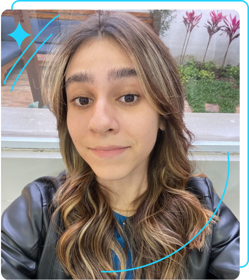

Sobre mim
Oiee, muito prazer meu nome é Gabriela Darezzo, atualmente curso a graduação de Sistemas de Informação!
Sim, por mais mulheres na tecnologia, entretanto minha história nem sempre foi linear,
cursei 1 ano de publicidade e tive certeza que a tecnologia fazia uma falta danada!
Com essa curva no meio do caminho adquiri experiências muito válidas que fizeram com que eu desenvolvesse de forma excelente a minha comunicação,
entendimento sobre o que o cliente quer, design, marketing e sou muito grata.
O que me fez dar aquela saudade e realmente voltar foram experiências que adquiri no técnico em Desenvolvimento de Sistemas
que concluí na melhor Etec de SP, lá tive muita base sobre tudo na tecnologia.
E um pouquinho antes, lá pelos meus 12 anos, quando fiz um curso de robótica na Happy Code que me brilhou os olhos ver o Arduino
e todas as suas possibilidades que eu poderia criar e programar.
Agora estou estagiando na área depois de muita insistência, aprendendo muito, que é o meu objetivo,
aprender e mostrar o que sei e que posso ir muito longe, com uma chance.
Bom, é isso, estou me encontrando no mundo tech!
